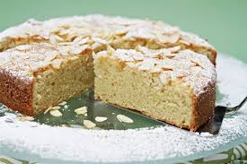

PASTELES
Elaborado con harina una masa suave,mantequilla,huevos,azucar,leche entre mas ingredientes,varia depende el sabor del pastel,para cocer se introduce en el orno y es rellenado o se cubrede crema,chocolate,frutas u otros productos de reposteria.
La palabra pastel deriva del griego ‘pasté,Los primeros registros de recetas dulces simples se remontan a Mesopotamia y al Antiguo Egipto, hace más de siete mil años, dónde se preparaban panes de miel redondos espolvoreados con ajonjolí. En la Antigua Grecia, los nacimientos se celebraban con pasteles. Los fabricados en Atenas tenían fama, eran elaborados con harina, queso y aceite. Fue en el Imperio Romano, hacia el siglo IV a.C. cuando se distinguió por primera vez la diferencia entre el panadero y pastelero; introduciendo el oficio de los ‘pastillariorum’.
En ocasiones, el término pastel se emplea como sinónimo de tarta o de torta. Cabe destacar que, de acuerdo a diversas características específicas de cada preparación, el pastel también puede recibir otros nombres. Cuando se trata de un pastel de tamaño reducido, puede nombrarse como pastelito o pastelillo.
Exiten varios tipos de pastel, el que es mas consumido es.
| |
vainilla
El pastel de vainilla conquista a la vista y al paladar, está elaborado con esponjoso pan sabor naranja, relleno de mantequilla francesa sabor vainilla y humectado con jarabe especia.
 |
chocolate
Todo comienza con la corteza perfecta, que luego se llena con una mezcla de chocolate, mantequilla, leche, harina, la sal, los huevos, el azúcar y el extracto de vainilla. Dependiendo de la elección de pastel de chocolate, se pueden añadir ingredientes adicionales, tales como el queso crema para un pastel de queso de chocolate o nueces para un pastel de nuez de chocolate. Todos estos ingredientes solos, excepto el chocolate, quedan muy lejos de las delicias grandioso de pastel de chocolate, pero cuando se mezclan juntos correctamente, crean esa obra maestra exacta.
| |
tres leches
El pastel de tres leches tiene una rica historia. Su nombre proviene de su preparación con tres tipos de leches: evaporada, crema y leche condensada.
 |
Cajetas
Amantes de la cajeta, este es su pastel, elaborado con un esponjoso pan natural, tiene un delicioso relleno de cajeta, cubierto de crema batida natural y bañado en 3 leches.
| |
Almedra
Este pastel de almendras, tiene un sabor y textura muy rico entre el bizcocho del pastel, el relleno cremoso y las almendras crujientes. Rico con un café.
|  |